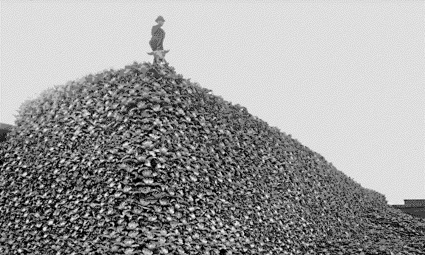

Biodiversity loss

From that time forth he believed that the wise man is one who never sets himself apart from other living things, whether they have speech or not, and in later years he strove long to learn what can be learned, in silence, from the eyes of animals, the flight of birds, the great slow gestures of trees.
Ursula K. Le Guin, A Wizard of Earthsea
Biodiversity is often defined as "the totality of genes, species, and ecosystems of a region". Another definition might be variety of life. Biodiversity loss could therefore be seen as a reduction in the variety of life.
Biodiversity loss can include the decrease, disappearance, or extinction of a species in a specific area or globally. The current primary driver of biodiversity loss appears to be habitat destruction (mainly for agriculture), which includes deforestation, as well as climate change more generally. The current rate of global biodiversity loss is estimated to be 100 to 1000 higher than the naturally occurring rate which is faster than at any other time in human history.
The ongoing biodiversity loss is sometimes called the holocene extinction.
Connections:
- Acceleration - It seems reasonable to assume that the less biodiversity the planet has the quicker certain disruptive changes can/will be.
- Breakdown of information infrastructure - There have existed people with the ability to listen to and understand the ancient languages of other animals and through their words come to understand certain places. A loss of biodiversity also means a loss of the richness of natural information and communication.
- Complexity mismatch - The lower the biodiversity of the planet's ecosystems the lower their ability for complex responses to complex disruptions.
- Dealing with death - It is of the utmost importance to remember that the technical expression biodiversity loss means death and extinction, too much death for modernity to even attempt to internalise.
- Desertification - As an example, certain attempts at reforestation fail completely and instead lead to desertification, most likely because of the lack of biodiversity in planted forests.
- Ecological crisis - Reduce biodiversity enough and ecosystems collapse.
- Ignorance of ongoing collapse - The collapse of biodiversity is ongoing, not something ahead of us.
- Lack of a living world view - How do we return to a view of the world as alive when there are no more birds to sing along with?
- Lack of balance - With fewer species left there will most likely occur expansions of certain populations that destabilise the balance of several ecosystems.
- Lack of resilient systems - The more diversity and complexity is reduced the less resilient the planet's systems for maintaining homeorhesis become.
- Lack of time - The current loss of species is 1,000 to 10,000 times higher than the natural extinction rate. Every day is too late.
- Insect loss - Most of the biodiversity loss lies outside the charismatic larger animals we teach children the sounds of, rather there are many insects going extinct. A typical example of attempting to increase pollinators is to introduce honey bees to certain places. This seems good, well-intentioned at least, but unfortunately causes problems for all other bees, bees that don't produce sweetness we can consume.
- Malnutrition - How do we even begin to quantify (must we?) the impact biodiversity loss has on the nutrients of the soil, the bacteria in our guts, and the unknown qualities of air, water, sounds, spirits?
- Mass climate migration - If a certain species that has supported much of an ecosystem ceases to exist in a certain place there is sometimes nothing left to do but leave.
- Meaning crisis - The less life left on the planet, the less we have to live and fight for.
- Planetary boundaries - There is undoubtedly a recursive causality with biodiversity loss further pushing planetary boundaries while simultaneously being affected by the pushing past of planetary boundaries.
- Poverty - A loss of the richness of the variety of life, what poverty could be more threatening?
- Sameness - We'll have fewer species than ever but more of the ones we have. I do love cows but I'm not sure we need every animal to be a cow.
- Soil erosion - Do we truly believe we know what keeps the soil alive, what holds it together?
- Spiritual metacrisis - Diversity is what breathes spirits into the Earth.
- Story of separation - All other animals are dying but we seem to be doing quite well. Did you watch Eurovision yesterday?
- The desacration of all places - Nothing makes clearer the silence of the temple than the distant sound of crickets above the bamboo.
- The minimisation of all things wild - How can anything be wild without diversity? What is wildness but unending diversity and depth?
- Tipping points - At a certain level of biodiversity we might reach a tipping point where global ecosystems completely collapse.
- Wisdom crisis - The wisdom of every animal will die with them.